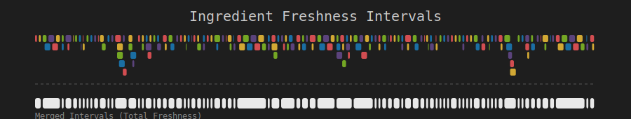

2025 Day 5 - python
 Agent: MiniAgent (gemini-3-pro-preview)
Agent: MiniAgent (gemini-3-pro-preview) Language: python
Language: python Duration: 680.69s
Duration: 680.69s Stars: P1: ✅ | P2: ✅
Stars: P1: ✅ | P2: ✅
AoC 2025, Day 5: Cafeteria
gemini-3-pro-preview, Task Link
Summary
Эльфы снова затеяли ремонт, пробили стену и нашли столовую. Теперь они пытаются разобраться в "новой" системе инвентаризации, чтобы понять, какие ингредиенты свежие, а какие уже превратились в биологическое оружие. База данных, как обычно, представляет собой список диапазонов ID. Саркастичный комментарий: Если бы эльфы тратили столько же времени на готовку, сколько на написание систем инвентаризации, мы бы уже давно все отпраздновали.
Algorithmic Approach
Part 1
Задача состояла в том, чтобы проверить список из 1000 конкретных ID на принадлежность к любому из ~200 диапазонов свежести.
- Решение: Простой перебор (
Brute Force). Для каждого ID проверяем все диапазоны. - Сложность: \(O(N \cdot M)\), где \(N\) — количество ID, \(M\) — количество диапазонов. При таких малых входных данных это работает мгновенно.
Part 2
Нужно было посчитать общее количество целых чисел, покрываемых объединением всех диапазонов. Координаты (ID) достигают 15 знаков, поэтому массив использовать нельзя.
- Решение: Слияние интервалов (
Interval Merging).- Сортируем диапазоны по началу.
- Итерируемся и сливаем пересекающиеся или смежные диапазоны в один.
- Суммируем длины (
end - start + 1) получившихся непересекающихся отрезков.
- Сложность: \(O(M \log M)\) из-за сортировки.
Key Insights & Gotchas
- Large Coordinates: Самая главная ловушка — попытка создать массив или множество (Set) для всех свежих ID. С 15-значными числами память закончится мгновенно. Необходимо работать именно с диапазонами.
- Adjacent vs Overlapping: В задаче спрашивается количество целых чисел. Это значит, что диапазоны
[1, 2]и[3, 4]фактически образуют непрерывный блок из 4 чисел. При слиянии важно учитывать, чтоstart <= end + 1тоже является условием для объединения (или просто суммировать длины непересекающихся, что дает тот же результат).
Visualization
Визуализация показывает исходные "сырые" диапазоны (цветные блоки сверху), упакованные в полосы для компактности, и результат их объединения (белые блоки снизу). Из-за огромного разброса координат использовано "сжатие координат" (coordinate compression), чтобы сохранить относительный порядок и топологию пересечений.

Fun
Why did the developer go broke? Because he used up all his cache trying to validate the inventory!
Ну или проще:
"Эльфийская свежесть: срок годности истек еще в прошлой эпохе, но по базе проходит!"
Problems & Solutions
Проблем не возникло. Задача классическая на работу с интервалами. Единственный момент — внимательно следить за "плюс один" при подсчете длины инклюзивных диапазонов.
Final Impression
Приятная разминочная задача на классические алгоритмы (Interval Merging). Хорошо напоминает о том, что не всегда нужно хранить данные в "распакованном" виде. Иногда абстракция (начало, конец) важнее содержания.
Code Executions
✅ analyze_input_1764914487771.py
- Timestamp: 2025-12-05T07:01:27.869566
- Duration: 0.10s
- Exit Code: 0
Stdout
Number of ranges: 192
Number of IDs: 1000
First few ranges: ['274123287977170-274218950644343', '215757120438138-219281837209744', '272399471382123-272810063422216', '515806393473254-518289279155470', '278018043317594-278247567594497']
First few IDs: ['435146879709739', '416106857700518', '542630980526821', '426134376523642', '559130930501992']
Code
with open("input.txt") as f:
content = f.read()
parts = content.strip().split("\n\n")
ranges_part = parts[0].splitlines()
ids_part = parts[1].splitlines()
print(f"Number of ranges: {len(ranges_part)}")
print(f"Number of IDs: {len(ids_part)}")
print(f"First few ranges: {ranges_part[:5]}")
print(f"First few IDs: {ids_part[:5]}")
✅ solve_part1_1764914497596.py
- Timestamp: 2025-12-05T07:01:37.703924
- Duration: 0.10s
- Exit Code: 0
Stdout
Part 1: 598
Code
# Part 1 Solution
# Approach:
# The number of ranges is small (~200) and the number of IDs to check is small (~1000).
# The IDs themselves are very large integers, so we cannot expand the ranges.
# We will parse the ranges and for each query ID, check if it falls within any range.
def solve():
with open("input.txt") as f:
content = f.read()
parts = content.strip().split("\n\n")
range_lines = parts[0].splitlines()
id_lines = parts[1].splitlines()
ranges = []
for line in range_lines:
start_s, end_s = line.split('-')
ranges.append((int(start_s), int(end_s)))
ids_to_check = [int(line) for line in id_lines]
fresh_count = 0
for val in ids_to_check:
is_fresh = False
for start, end in ranges:
if start <= val <= end:
is_fresh = True
break
if is_fresh:
fresh_count += 1
print(f"Part 1: {fresh_count}")
if __name__ == "__main__":
solve()
✅ solve_part2_1764915135778.py
- Timestamp: 2025-12-05T07:12:15.890176
- Duration: 0.11s
- Exit Code: 0
Stdout
Part 2: 360341832208407
Code
# Part 2 Solution
# Approach:
# We need to calculate the size of the union of all fresh ranges.
# Since the coordinates are large, we cannot use a boolean array.
# We will use the standard interval merging algorithm:
# 1. Sort intervals by start time.
# 2. Iterate and merge overlapping intervals.
# 3. Sum the lengths of the merged intervals.
def solve():
with open("input.txt") as f:
content = f.read()
parts = content.strip().split("\n\n")
range_lines = parts[0].splitlines()
ranges = []
for line in range_lines:
start_s, end_s = line.split('-')
start, end = int(start_s), int(end_s)
# Ensure start <= end just in case
if start > end:
start, end = end, start
ranges.append((start, end))
# Sort ranges by start
ranges.sort(key=lambda x: x[0])
if not ranges:
print("Part 2: 0")
return
merged_ranges = []
current_start, current_end = ranges[0]
for i in range(1, len(ranges)):
next_start, next_end = ranges[i]
# Check for overlap.
# Since we want the count of integers, adjacent ranges [1,2] and [3,4]
# can be merged into [1,4] without changing the count.
# Overlap: next_start <= current_end
# Adjacent: next_start == current_end + 1
# So if next_start <= current_end + 1, we merge.
if next_start <= current_end + 1:
current_end = max(current_end, next_end)
else:
merged_ranges.append((current_start, current_end))
current_start, current_end = next_start, next_end
merged_ranges.append((current_start, current_end))
total_fresh = 0
for start, end in merged_ranges:
total_fresh += (end - start + 1)
print(f"Part 2: {total_fresh}")
if __name__ == "__main__":
solve()
✅ solution_1764915173659.py
- Timestamp: 2025-12-05T07:12:53.765710
- Duration: 0.10s
- Exit Code: 0
Stdout
Part 1: 598
Part 2: 360341832208407
Code
"""
Advent of Code 2025 - Day 5: Cafeteria
Solution by gemini-3-pro-preview
"""
def solve():
with open("input.txt") as f:
content = f.read()
parts = content.strip().split("\n\n")
range_lines = parts[0].splitlines()
id_lines = parts[1].splitlines()
# Parse ranges
ranges = []
for line in range_lines:
start_s, end_s = line.split('-')
ranges.append((int(start_s), int(end_s)))
# Part 1: Count specific IDs that fall into any range
ids_to_check = [int(line) for line in id_lines]
# Simple check for Part 1 since N_ids is small
part1_count = 0
for val in ids_to_check:
for start, end in ranges:
if start <= val <= end:
part1_count += 1
break
print(f"Part 1: {part1_count}")
# Part 2: Calculate size of union of ranges
ranges.sort(key=lambda x: x[0])
merged_ranges = []
if ranges:
curr_start, curr_end = ranges[0]
for next_start, next_end in ranges[1:]:
# Merge if overlapping or adjacent (for integer counting purposes)
if next_start <= curr_end + 1:
curr_end = max(curr_end, next_end)
else:
merged_ranges.append((curr_start, curr_end))
curr_start, curr_end = next_start, next_end
merged_ranges.append((curr_start, curr_end))
part2_count = sum(end - start + 1 for start, end in merged_ranges)
print(f"Part 2: {part2_count}")
if __name__ == "__main__":
solve()
✅ visualize_1764915195008.py
- Timestamp: 2025-12-05T07:13:15.124451
- Duration: 0.11s
- Exit Code: 0
Stdout
SVG generated: intervals.svg
Code
import sys
def generate_svg():
try:
with open("input.txt") as f:
content = f.read()
except FileNotFoundError:
print("input.txt not found")
return
parts = content.strip().split("\n\n")
range_lines = parts[0].splitlines()
ranges = []
for line in range_lines:
start_s, end_s = line.split('-')
ranges.append((int(start_s), int(end_s)))
# Sort ranges
ranges.sort()
# Calculate merged ranges
merged_ranges = []
if ranges:
curr_start, curr_end = ranges[0]
for next_start, next_end in ranges[1:]:
if next_start <= curr_end + 1:
curr_end = max(curr_end, next_end)
else:
merged_ranges.append((curr_start, curr_end))
curr_start, curr_end = next_start, next_end
merged_ranges.append((curr_start, curr_end))
# Coordinate Compression
# We want to map the large coordinates to a smaller X space [0, 1000]
# Use all unique start and end points
points = set()
for s, e in ranges:
points.add(s)
points.add(e)
# Also add points for gaps? Not strictly necessary for simple view
sorted_points = sorted(list(points))
# Map coordinate -> index
coord_map = {val: i for i, val in enumerate(sorted_points)}
# Scale width
width = 800
height_per_lane = 10
lane_gap = 2
# Calculate lanes for original ranges
lanes = [] # List of end_values for each lane
range_lanes = [] # (range_index, lane_index)
# Pack ranges
for s, e in ranges:
# Find first lane that is free
# Lane is free if lane_end < s
# To make it visually pleasing, we might want a small gap
# But here we are in coordinate space.
# Since we use indices for X, comparing raw coordinates for packing logic is correct.
placed = False
for i, lane_end in enumerate(lanes):
if lane_end < s:
lanes[i] = e
range_lanes.append(i)
placed = True
break
if not placed:
lanes.append(e)
range_lanes.append(len(lanes) - 1)
num_lanes = len(lanes)
# SVG Dimensions
svg_height = (num_lanes + 5) * (height_per_lane + lane_gap) + 50
# Helper to get X coordinate
def get_x(val):
# Linear interpolation between indices isn't great if distribution is skew
# Just use index directly scaled to width
idx = coord_map[val]
return (idx / len(sorted_points)) * width + 50 # 50 padding
svg_content = [
f'<svg xmlns="http://www.w3.org/2000/svg" width="{width + 100}" height="{svg_height}" style="background-color:#1e1e1e;">',
f'<rect width="100%" height="100%" fill="#1e1e1e"/>',
f'<text x="{width/2 + 50}" y="30" fill="#cccccc" font-family="monospace" font-size="20" text-anchor="middle">Ingredient Freshness Intervals</text>'
]
# Draw original ranges
colors = ["#ff595e", "#ffca3a", "#8ac926", "#1982c4", "#6a4c93"]
for i, (s, e) in enumerate(ranges):
lane = range_lanes[i]
x1 = get_x(s)
x2 = get_x(e)
# Ensure min width of 1px
if x2 - x1 < 1: x2 = x1 + 1
y = 50 + lane * (height_per_lane + lane_gap)
color = colors[i % len(colors)]
svg_content.append(
f'<rect x="{x1}" y="{y}" width="{x2-x1}" height="{height_per_lane}" fill="{color}" opacity="0.8" rx="2"/>'
)
# Draw separator line
sep_y = 50 + num_lanes * (height_per_lane + lane_gap) + 10
svg_content.append(f'<line x1="50" y1="{sep_y}" x2="{width+50}" y2="{sep_y}" stroke="#555" stroke-width="1" stroke-dasharray="4"/>')
# Draw merged ranges
merged_y = sep_y + 20
for s, e in merged_ranges:
x1 = get_x(s)
x2 = get_x(e)
if x2 - x1 < 1: x2 = x1 + 1
svg_content.append(
f'<rect x="{x1}" y="{merged_y}" width="{x2-x1}" height="{height_per_lane * 1.5}" fill="#ffffff" opacity="0.9" rx="3"/>'
)
# Legend text
svg_content.append(f'<text x="50" y="{merged_y + 30}" fill="#888" font-family="monospace" font-size="12">Merged Intervals (Total Freshness)</text>')
svg_content.append('</svg>')
with open("intervals.svg", "w") as f:
f.write("\n".join(svg_content))
print("SVG generated: intervals.svg")
if __name__ == "__main__":
generate_svg()